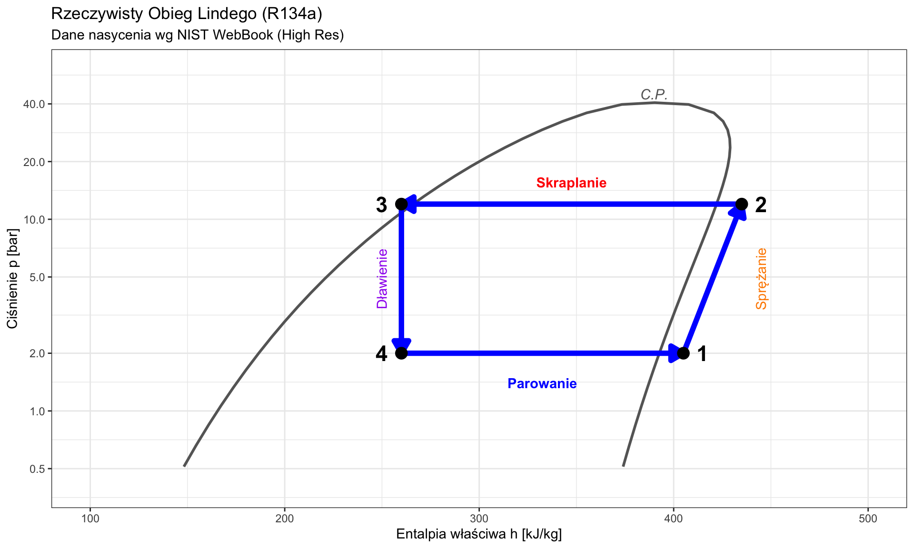

W11: Chłodnictwo i Pompy Ciepła
Obiegi Lewobieżne w Praktyce Inżynierskiej
prof. UPP dr hab. inż. Marek Urbaniak
Wydział Inżynierii Środowiska i Inżynierii Mechanicznej


Agenda Wykładu
- Termodynamika Chłodzenia (Transport “pod górę”, COP)
- Idealny Obieg Chłodniczy (Odwrócony Carnot)
- Rzeczywisty Obieg Sprężarkowy (Linde, Dławienie J-T)
- Wykres log(p)-h (Analiza, Obliczenia)
- Modyfikacje Obiegu (Dochłodzenie i Przegrzanie)
- Czynniki Chłodnicze (Freony vs Eko)
- Pompy Ciepła (Zastosowanie grzewcze)
1. Idea Chłodzenia (Obieg Lewobieżny)
Zgodnie z II Zasadą Termodynamiki (Clausius), ciepło nie płynie samorzutnie od ciała zimniejszego do cieplejszego.
- Proces wymuszony: Aby przenieść ciepło z temperatury niższej (\(T_L\)) do wyższej
(\(T_H\)), musimy dostarczyć energię z zewnątrz (pracę \(L\)). - Kierunek: Obieg przebiega odwrotnie do ruchu wskazówek zegara
na wykresie p-v.
Cel i Koszt
- Chłodziarka: Utrzymuje \(T_L < T_{otoczenia}\). Celem jest ciepło odebrane (\(Q_L\)).
- Pompa Ciepła: Ogrzewa pomieszczenie. Celem jest ciepło oddane (\(Q_H\)).
Mierniki Efektywności (COP)
W urządzeniach chłodniczych sprawność może przekraczać 1, dlatego używamy COP (Coefficient of Performance).
Chłodziarka (\(\varepsilon_{ch}\))
\[ COP_{ch} = \frac{\text{Cel}}{\text{Koszt}} = \frac{Q_L}{|L|} \]
Dla domowej lodówki
\(COP \approx 2-3\). (1 kW prądu “przepompowuje” 3 kW ciepła).
Pompa Ciepła (\(\varepsilon_{g}\))
\(COP_{g} = \frac{Q_H}{|L|} = \frac{Q_L + |L|}{|L|}\)
Zależność: \[ COP_{g} = COP_{ch} + 1 \]
Terminologia: EER
W branży chłodniczej i HVAC zamiast \(COP_{ch}\) często stosuje się termin EER (Energy Efficiency Ratio). To ta sama wielkość fizyczna — stosunek wydajności chłodniczej do mocy napędowej. W normach europejskich EER jest podawany w warunkach znormalizowanych (\(t_o = 2^\circ C, t_k = 40^\circ C\)).
2. Dlaczego nie Carnot?
Odwrócony obieg Carnota ma teoretycznie najwyższe COP. Dlaczego go nie budujemy?
Problem 1: Sprężanie pary mokrej
Wymagałoby sprężarki, która radzi sobie z kropelkami cieczy. Skutek: Kropelki cieczy niszczą łopatki/tłoki (“uderzenia hydrauliczne”).
Problem 2: Rozprężanie w turbinie
Mały zysk energii (ciecz ma małą objętość właściwą). Skutek: Koszt turbiny przewyższa zysk energetyczny.
Rozwiązanie Inżynierskie
Zastępujemy turbinę zaworem dławiącym, a sprężanie realizujemy w obszarze pary suchej. Tak powstaje Obieg Lindego.
3. Obieg Lindego (Kompresorowy)
Standard przemysłowy (lodówki, klimatyzatory, pompy ciepła).
Schemat Przemian:
- 1-2 Sprężarka: Adiabatyczne sprężanie pary suchej (\(s=const\)).
- 2-3 Skraplacz: Izobaryczne oddawanie ciepła (\(p=const\)). Czynnik skrapla się.
- 3-4 Zawór Rozprężny: Izentalpowe dławienie (\(h=const\)).
- 4-1 Parownik: Izobaryczne wrzenie (\(p=const\)). Pobranie ciepła \(Q_L\).
Zjawisko Dławienia (Joule-Thomson)
W zaworze rozprężnym (rurka kapilarna) wykorzystujemy efekt Joule’a-Thomsona.
- Proces: Przepływ bez wymiany ciepła (\(Q=0\)) i bez pracy (\(L_t=0\)).
- Bilans I Zasady: \[ h_3 = h_4 \quad (\text{entalpia stała}) \]
- Efekt: Dla czynników chłodniczych spadek ciśnienia powoduje spadek temperatury i częściowe odparowanie cieczy (powstaje para mokra o niskiej jakości).
To strata egzergii (proces nieodwracalny), ale zyskujemy ogromną prostotę konstrukcji.
4. Wykres log(p)-h
Podstawowe narzędzie inżyniera chłodnictwa i HVAC. Oś Y (log p) pozwala łatwo rysować izobary, a Oś X (h) pozwala odczytywać ciepło i pracę jako odcinki.
Kluczowe odległości na wykresie:
- Praca sprężania: \(l = h_2 - h_1\) (Rzut poziomy krzywej sprężania).
- Efekt chłodniczy: \(q_L = h_1 - h_4\) (Długość odcinka parowania).
- Ciepło skraplania: \(q_H = h_2 - h_3\) (Długość górnego odcinka).
Wizualizacja: Obieg na p-h
5. Modyfikacje Rzeczywiste
W praktyce punkty 1 i 3 wychodzą poza obszar mokry:
A. Przegrzanie Par (Superheating)
Para na ssaniu do sprężarki (pkt 1) jest przegrzewana powyżej temperatury nasycenia.
- Cel: Gwarancja, że do cylindra nie trafi ani kropla cieczy.
B. Dochłodzenie Cieczy (Subcooling)
Ciecz za skraplaczem (pkt 3) jest dochładzana.
- Cel: Zwiększenie różnicy entalpii w parowniku (\(h_1 - h_4\)) bez dodatkowej pracy sprężarki.
- Wynik: Wzrost COP.
6. Czynniki Chłodnicze
Substancja musi wrzeć w niskiej temperaturze (np. \(-20^\circ C\)) i skraplać się w wysokiej (\(40^\circ C\)) przy rozsądnych ciśnieniach.
| Generacja | Czynnik | ODP | GWP | Status | Zastosowanie |
|---|---|---|---|---|---|
| CFC | R12 | 1.0 | 10 900 | ⛔ Zakazany | — |
| HCFC | R22 | 0.05 | 1 810 | ⚠️ Wycofywany | Stare klimat. |
| HFC | R134a | 0 | 1 430 | ⚠️ Wycofywany | Klimatyzacja |
| HFO | R1234yf | 0 | 4 | ✅ Aktualny | Motoryzacja |
| Naturalny | R717 (NH₃) | 0 | 0 | ✅ | Przemysł |
| Naturalny | R744 (CO₂) | 0 | 1 | ✅ | Supermarkety |
| Naturalny | R290 (Propan) | 0 | 3 | ✅ | Pompy ciepła |
Trend
Przyszłość to czynniki naturalne (GWP ≈ 0) i HFO (GWP < 10). Rozporządzenie EU F-Gas wymusza wycofanie HFC do 2030.
7. Pompy Ciepła
“Lodówka wywrócona na lewą stronę” — to samo urządzenie, inny cel.
Chłodziarka
\(COP_{ch} = \frac{Q_L}{L}\) (typowo 2–3)
Pompa Ciepła
\(COP_{g} = \frac{Q_H}{L} = COP_{ch} + 1\) (typowo 3–5)
Obieg Gazowy (Joule’a-Braytona)|Można realizować ogrzewanie/chłodzenie bez przemian fazowych, używając powietrza. Stosowany w klimatyzacji samolotowej.
Podsumowanie W11
Linde vs Carnot: Zastąpiliśmy drogą turbinę tanim zaworem dławiącym (kosztem wzrostu entropii).
Wykres p-h: Kluczowe narzędzie. Pole parowania to moc chłodnicza.
Ekologia: Przyszłość to czynniki naturalne (Propan, \(CO_2\)).
Zagadnienia do Egzaminu
- Obliczyć COP chłodziarki i pompy ciepła mając dane entalpie (\(h_1, h_2, h_3, h_4\)).
- Narysować obieg Lindego na wykresie log p - h i T-s.
- Wyjaśnić różnicę między dławieniem a rozprężaniem izentropowym.
Zadanie Domowe
Zadanie Dla Chętnych
Narysuj schemat domowej lodówki. Wskaż, który element jest gorący (skraplacz), a który zimny (parownik). Dlaczego kratka z tyłu lodówki musi mieć wentylację?
Termodynamika Techniczna (W11)